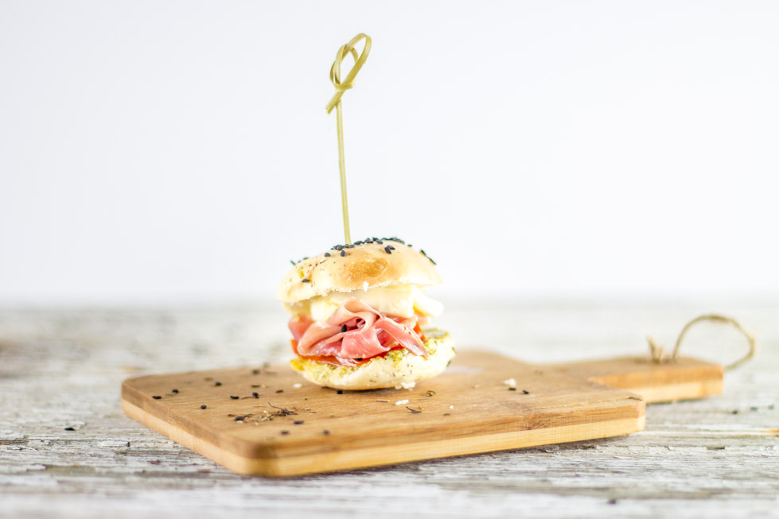

Minis bagels jambon, mozzarella, pesto, tomates

Des petites bouchées apéritives, un délicieux cocktail et le soleil en prime ça vous dit ? Si c’est le cas alors la recette de minis bagels qui va suivre devrait vous plaire.
© Cuisine moi un mouton
A partir d’aujourd’hui et pour les mois à venir je vous invite à prendre l’aperitivo avec moi, entendez par là l’apéritif à l’italienne!
Tout comme leurs voisins Espagnols avec leurs célèbres tapas, les Italiens ont pour habitude de se retrouver sous les coups de 18-19h en prélude du dîner pour picorer (même un peu plus que ça^^) et partager un moment de convivialité et c’est ce qu’ils appellent «l’aperitivo». Rien de très compliqué, un buffet remplit de canapés, hors-d’œuvres, bruschettas, crostinis en tous genres accompagnés d’une boisson alcoolisée (ou non), de la famille, des amis et ce sera parfait pour reproduire un apéritif à l’italienne et apprécier la «dolce vita» comme si on y était !
Je me suis laissée prendre au jeu et j’ai imaginé quatre recettes d’aperitivo. Vous auriez dû voir ça ! Un petit calepin, des idées plein la tête, mon chéri voulant goûter à chacune de mes idées de recettes et puis finalement il a fallu trancher… Chacune de mes bouchées apéritives seront accompagnées des célèbres cocktails Martini et pour cette première recette j’ai choisi le Martini royale rosato.
Vous l’avez deviné en regardant les photos, ma première recette pour cet apéritif improvisé n’est autre que des minis bagels au jambon de parme, mozzarella, pesto et tomates. Pas besoin de vous faire un dessin tout est dit dans le titre et cette association de saveurs est de loin ma préférée (vous la retrouverez ici aussi) ! Je ne sais pas pourquoi mais j’adore ça et je n’ai d’ailleurs qu’une envie en écrivant cette recette c’est d’aller me décongeler les bagels qui se trouvent dans mon congélateur et de m’en refaire là tout de suite (en plus j’ai tous les ingrédients dans le frigo^^).
Avant de vous donner la recette je vous confirme pour ceux qui l’avaient devinés qu’il y a deux jeux de photos ; les miennes et celles d’Olivier Hellard photographe pour Martini.
Je vous laisse maintenant avec la recette et j’espère qu’elle vous plaira ! Et si le cœur vous en dit Rdv à 18h pour picorer ensemble 😉
© Olivier Hellard, photographe Martini
© Cuisine moi un mouton
© Cuisine moi un mouton
© Cuisine moi un mouton
© Cuisine moi un mouton
© Cuisine moi un mouton
© Cuisine moi un mouton
Ingrédients
- Farine - 750g
- Levure de boulanger instantanée - 1 sachet
- Sel - 1 càs
- Eau tiède - 380ml
- Miel - 2,5 càs
- Huile d'olive - 2 càs
- Graine de sésame, pavot, amandes etc..
- Eau - 3 litres
- Maizena - 1 càs
- Miel - 1 càs
- Sel - 2 càs
- Jambon de parme - 4 tranches
- Pesto
- Mozzarella - 125g
- Tomates - 2 ou des tomates cerises
- Martini rosato - 5cl
- Martini Prosecco - 5cl
- Orange - 1/8
- Glaçons
Instructions
- Mélanger dans le bol de votre robot (ou dans un grand saladier) la farine, la levure et le sel. Réserver
- Dans un autre récipient, mélanger l'eau, le miel et l'huile d'olive
- Verser cette préparation dans le mélange farine-levure-sel
- Pétrir pendant 10-15 minutes jusqu'à obtention d'une pâte lisse et élastique
- Peser la pâte et divisez-la en portions égales (pour moi de 30g) et former des boules
- Étirer les boules de manière à former un boudin
- Aplatir l'une des extrémités
- Envelopper les deux extrémités l'une dans l'autre en mettant l'extrémité "arrondie" dans l'extrémité plate
- Bien sceller la fermeture
- Déposer les bagels sur une plaque de cuisson recouverte de papier sulfurisé
- Saupoudrer de farine et couvrir de film alimentaire
- Laisser lever pendant une bonne heure à température ambiante
- Préchauffer le four à 225°
- Dans un bol, mélanger la maïzena avec 250 ml d'eau froide puis la dissoudre avec le reste des ingrédients de pochage dans un grand faitout
- Porter à ébullition et baisser ensuite pour que l'eau frémisse
- Plonger les bagels dans l'eau
- Au bout d'1 minutes, retournez-les et poursuivez la cuisson pendant 30 secondes supplémentaires
- Les sortir de l'eau avec un écumoire et posez-les sur une plaque de cuisson recouverte de papier sulfurisé
- Vous pouvez parsemer les bagels humides de sésame, pavot, amande ou autre garniture à ce moment là
- Enfourner et baisser la température du four à 210°
- Cuire pendant 20 minutes jusqu'à ce qu'ils soient bien dorés
- Couper vos tomates et votre mozzarella en morceaux de la taille de vos mini bagels
- Ouvrir un bagel en deux
- Déposer un peu de pesto
- Une tranche de tomate, suivi de jambon puis de mozzarella
- Refermer en vous aidant de piques à Tapas si vous voulez que ça reste bien en place
- C’est prêt !
- Dans un verre rempli de glace
- Verser 5cl de Martini® Rosato et 5 cl de Martini® Prosecco.
- Presser 1/8 d'orange dans le verre et jetez le dans le verre ("squeeze and drop").
- Mélanger et buvez bien frais!!

Les tips de la communauté
Recette très appréciée pour l'apéritif avec une présentation adorable. Commentaires positifs, nombreux testeurs enthousiastes. L'auteure confirme que les bagels sont partis très rapidement. Quelques questions pratiques sur le pochage. Excellente réception générale.
Astuces
- Parfait pour un apéritif ou un plat complet
- Ne pas faire lever plus de 1 heure (max) pour le pochage - sinon ils deviennent trop mous
- Possible de les cuire sans pochage préalable si les premiers essais sont ratés
Variantes suggérées
- Différentes combinaisons de garnitures possibles
Ajustements signalés
- Si les bagels s'affaissent pendant le pochage, c'est qu'ils ont levé trop longtemps